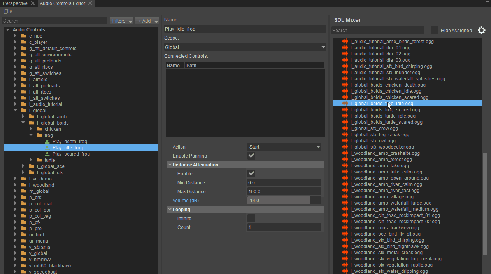
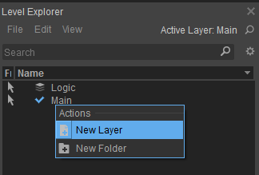
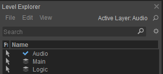

SDL Микшер в CRYENGINE
CRYENGINE включает простую систему реализации звука с использованием микшера SDL. Этот метод реализации предназначен для простых проектов, не требующих мощности более профессиональных решений, и служит основой, на которой команды разработчиков могут создавать свои собственные аудиорешения.
В настоящее время метод реализации поддерживает воспроизведение и остановку файлов MP3, Ogg Vorbis и WAVE, когда аудиосистема Триггеры выполняются и настраивают переключатели и состояния для обеспечения дополнительного контроля над воспроизводимыми звуками.
В этой теме
Настройка вашего проекта
Выполните следующие шаги, чтобы настроить проект:
- Включите микшер SDL в CRYENGINE. Консоль установив s_ImplName CVar для CryAudioImplSDLMixer. Это настройка по умолчанию в CRYENGINE. В качестве альтернативы вы также можете добавить следующую строку в файл system.cfg или user.cfg (расположенный в корневой папке CRYENGINE):
s_ImplName = CryAudioImplSDLMixer - Скопируйте все файлы Ogg Vorbis или WAVE в /<папка проекта>/assets/audio/sdlmixer
В версии 5.5 это местоположение изменилось на /<папка проекта>/<папка ресурсов проекта>/audio/sdlmixer/assets, где <папка ресурсов проекта> относится к папке ресурсов, установленной в файле .cryproject проекта.
Микшер SDL может воспроизводить только 16-битные файлы с частотой дискретизации 48 kHz, стерео- или монофайлы в форматах *.mp3, *.wav или *.ogg.
Начало работы
После настройки проекта вы сможете увидеть все свои аудиофайлы при открытии Редактор управления звуком. Доступ к редактору управления звуком можно получить через главное меню CRYENGINE. Инструменты -> Редактор управления звуком.
Когда вы выбираете триггер аудиосистемы в своем проекте, это позволяет вам подключать аудиофайлы, которые вы хотите воспроизводить или останавливать при выполнении этого триггера. Вы можете просто перетащить аудиофайл в папку Подключенные элементы управления поле на панели «Свойства». Кроме того, вы также можете перетащить аудиофайлы непосредственно на дерево элементов управления звуком и добавить триггер аудиосистемы непосредственно в аудиофайл.

После того как вы установили соединение между триггером аудиосистемы и вашими аудиофайлами, вы можете выбрать аудиофайл на панели «Подключенные элементы управления», чтобы отобразить его свойства.
| Недвижимость | Описание |
|---|---|
Действие | Позволяет вам выбрать либо Старт или Стоп воспроизведение аудиофайла в объекте, где срабатывает триггер. На другие объекты, в которых используется тот же звук, эффект не повлияет. Стоп действие. |
Включить панорамирование | Позволяет звуку панорамироваться в зависимости от положения аудиообъекта и положения слушателя. |
Включить ослабление расстояния | Позволяет линейно ослаблять звук в зависимости от расстояния между аудиообъектом и положением слушателя. |
Минимальное расстояние | Позволяет указать расстояние от слушателя, когда звук начинает затухать, если включено затухание расстояния. |
Макс. расстояние | Позволяет указать расстояние от слушателя, на котором звук перестанет быть слышимым, если включено затухание расстояния. |
Объем | Позволяет указать громкость в dB, при которой должен воспроизводиться звук. |
Зацикливание | Позволяет указать Граф значение, определяющее количество повторений звука до его остановки. Когда бесконечный установлен, звук будет зацикливаться до тех пор, пока он не будет явно остановлен (с использованием действия «Стоп» в другом триггере) или до тех пор, пока объект не будет уничтожен. |
Размещение триггера аудиосистемы в игре
Если вы выполнили вышеуказанные шаги, теперь вы можете выбрать триггер вашей аудиосистемы в редакторе и воспроизвести его на аудиообъекте. Вы можете предварительно прослушать триггеры вашей аудиосистемы в редакторе элементов управления звуком, щелкнув по нему правой кнопкой мыши и выбрав Выполнить триггер или нажав кнопку пробел.
Чтобы услышать свой звук в игре, вам необходимо разместить на уровне звуковой объект, который запускает триггер аудиосистемы во время игры.
Для каждого уровня рекомендуется сначала создать специальный аудиослой, который будет содержать все ваши аудиоданные. Чтобы создать выделенный аудиослой, нажмите кнопку Level Explorer вкладку, создайте новый слой и назовите его Аудио:

Поскольку long слой аудио активен (нажмите на него, нажав double, и вы увидите синий В показывая, что слой активен), все объекты, которые вы размещаете на уровне, будут включены в слой.

Теперь идите в Создать объект вкладка, выберите Аудио а затем Аудио-триггер сущность. Вы можете разместить объект на уровне, перетащив его в Перспектива Окно просмотра.

Всегда рекомендуется называть аудиообъекты, используя сокращения. Это улучшает читаемость, особенно при работе над большими проектами. Например, мы используем ATS как сокращение для Аудио-триггер; следовательно, звук небольшого костра можно было бы назвать ATS_small_fire на Аудио-триггер.
Вот некоторые распространенные сокращения, относящиеся к аудио:
- AAA (Окружение аудиозоны)
- AAE (объект аудиообласти)
- AAR (случайная область аудио)
- ATS (аудио-триггер)
- ACE (редактор управления звуком)
- АШ (Форма площади)
- AB (область)
- ASp (Площадь-Сфера)
- ASo (область сплошная)
- FG (Flow Graph)
Теперь вы можете выбрать триггер вашей аудиосистемы в Свойства вкладка Аудио-триггер.

Для получения дополнительной информации о Аудио-триггер в сочетании с микшером SDL, см. здесь.